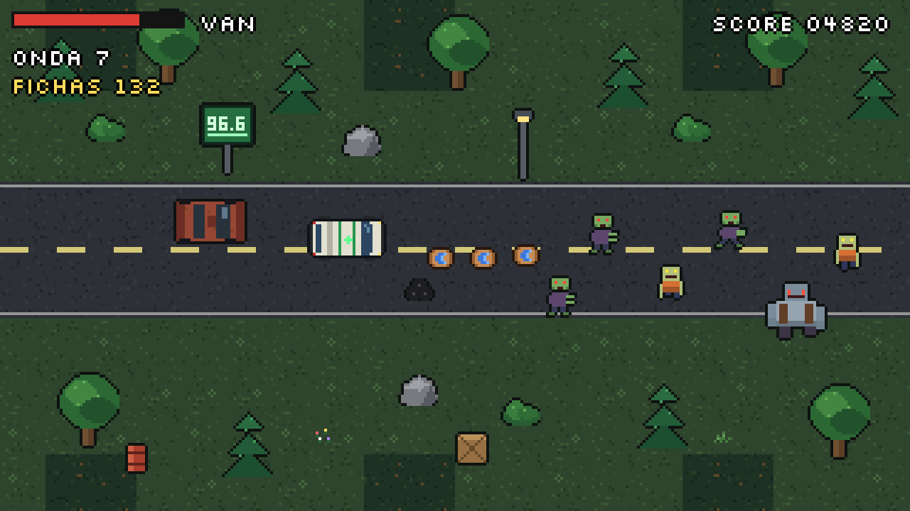

Dead Frequency: Horda
Dirija a van pela estrada, sintonize o rádio e aguente as ondas de zumbis. Cenários que mudam a cada partida e upgrades permanentes na oficina.
Abrir página do jogo → Estúdio indie · Godot
Estúdio indie · Godot
Somos um estúdio pequeno que faz jogos de sobrevivência, pixel art e muita bagunça controlada. Sempre quase prontos, sempre melhorando.
Catálogo
Projetos abertos, com código no GitHub e builds para jogar.
Dirija a van pela estrada, sintonize o rádio e aguente as ondas de zumbis. Cenários que mudam a cada partida e upgrades permanentes na oficina.
Abrir página do jogo →
O jogo original da série: sobreviva ouvindo a única rádio que ainda transmite. A base de onde nasceu o Horda.
Abrir página do jogo →Sobre
O Quase Pronto Studios nasceu das lives e da vontade de transformar ideias do chat em jogos de verdade. Cada projeto é desenvolvido em público, com código aberto, versões beta para testar e um launcher próprio que mantém tudo atualizado.
Galeria
A van, a estrada e a horda chegando.
